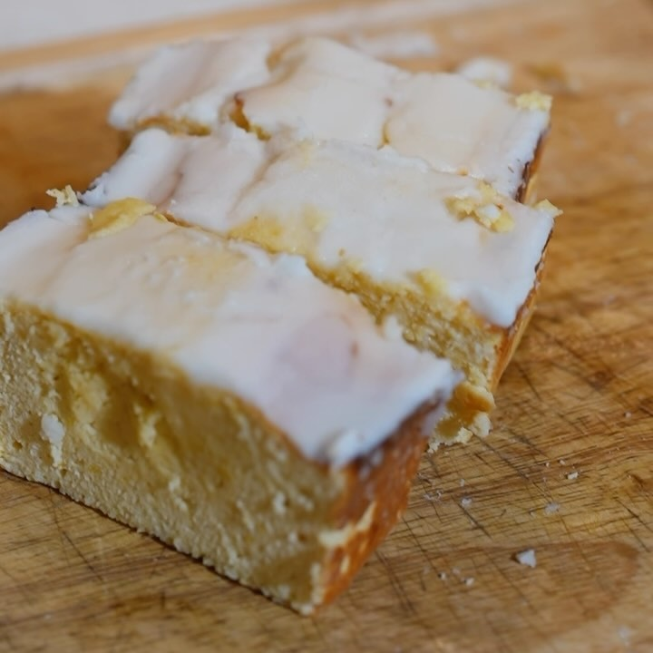

Pan Limón Starbucks
Ingredientes:
- 1 taza de harina de coco
- ⅓ taza fruta de monje
- 3 scoops proteína
- 1 cda polvo para hornear
- ½ cdita sal
- 1 cda ralladura de limón
- 2 huevos
- ¼ taza Jugo Limón
- ⅔ tazas Yogurt Griego
Para el glaseado:
- Fruta de monje
- Leche descremada
- Jugo de limón
Instrucciones:
- Añade en un bowl harina de coco, fruta de monje, proteína, polvo para hornear, sal, ralladura de
limón, huevos, jugo limón y el Yogurt Griego. Mezcla todo bien.
- Extiende tu mezcla en una sartén y métela al horno a 325°F por 50 mins.
- Para el glaseado añade fruta de monje en polvo, leche descremada y jugo de limón a otro bowl.
Revuelve todo
- Rociar glaseado en el pan. Cortar en 6 rebanadas.